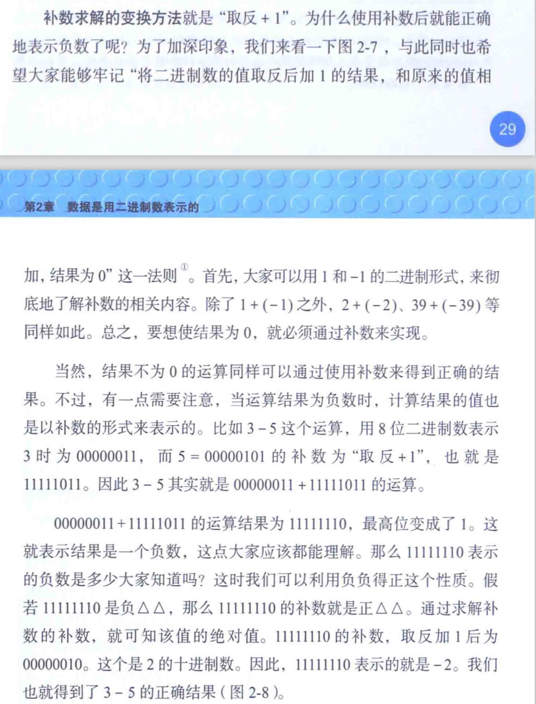
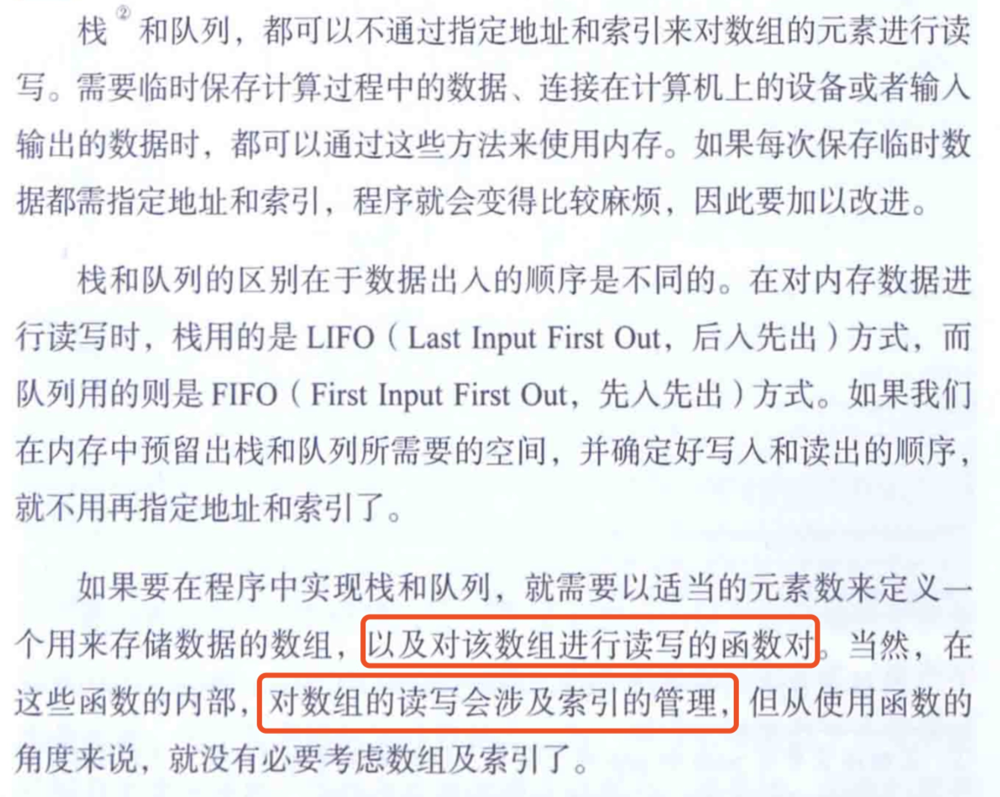
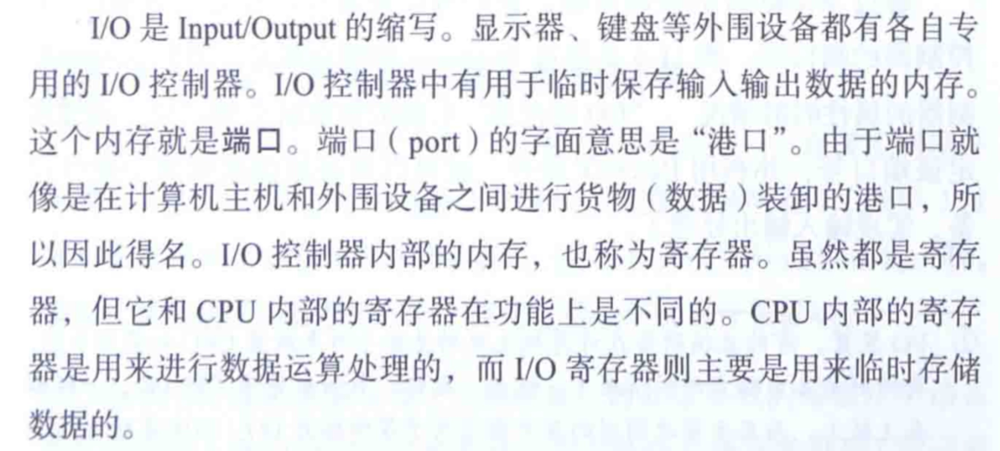

- 程序的比较指令是在cpu内做减法运算
- 机器语言的call指令，在将函数的入口地址设定到程序计数器之前，会把调用函数后要执行的指令地址存储在名为栈的主存内。 函数处理完毕以后，再通过函数的出口执行reture命令，return功能是将保存在栈中的地址设定大程序计数器中。
- 计算机做减法运算时，内部是在做加法运算，为此，在表示负数时要使用二进制的补数（用正数来表示负数）；例如，1-1，即1+（-1）；
求补码的简单方法，0-正数二进制，从而验证，二进制取反加1的结果，加上原来的值=0
补数就是取反+1；正数，负数都一样

- 对于计算溢出的位，计算机会直接忽略掉
-
十进制的浮点数应该遵循，小数点前面是0，小数点后面第一位不能是0；根据这个规则表示小数的方式就是正则表达式； 二进制中[将小数点前面的值固定为1的正则表达式]，具体就是讲二进制表示的小数左移或者右移（这里是逻辑移位， 因为符号位是独立的，因为浮点数由符号部分，尾数部分，指数部分的独立数值组合而成）数次后，整数部分的第一位变为1,第2位之后都是0， 且第一位的1在实际数据中不保存。由于第一位必须是1，因此省略该部分后节省了一个数据为，进而可以表示更多的数据范围； - 指针也是一种变量，它表示的不是数据的值，而是存储着数据的内存的地址。 char *a ,int *b,,a,b都是用来存储32位地址的变量，char,int表示的是从指针存储的地址中一次能够读写的数据字节数。 
-
